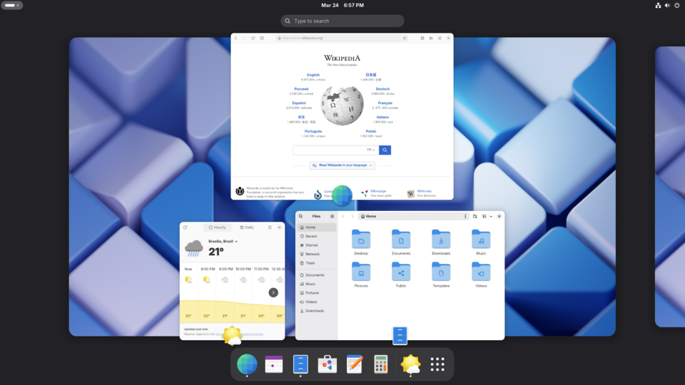
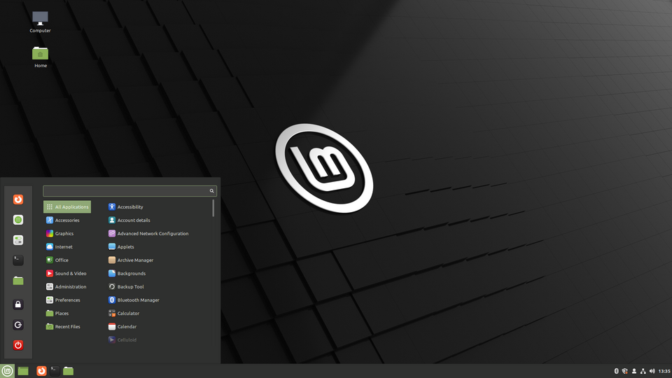
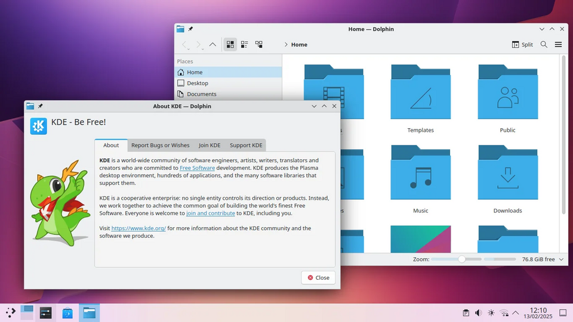
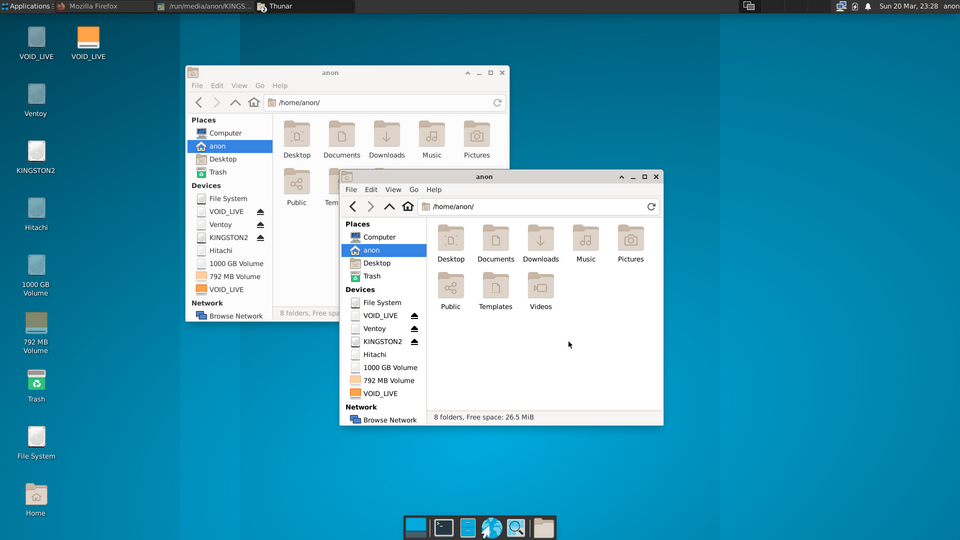
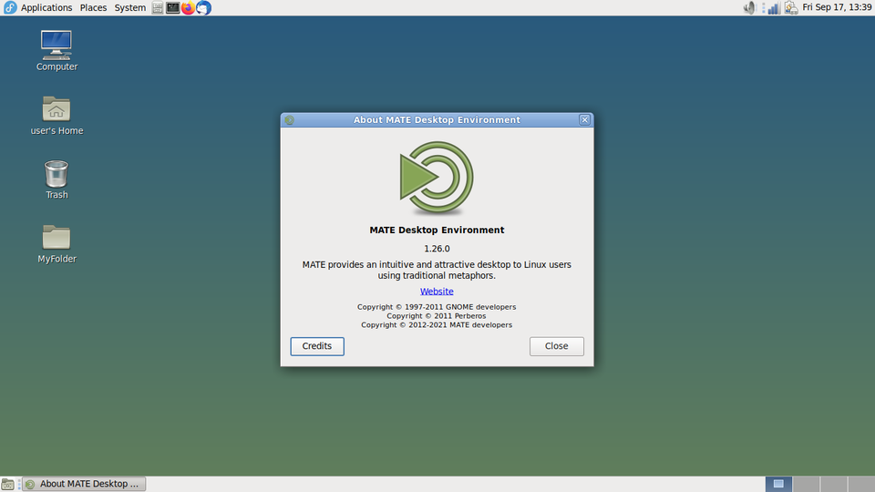

GNOME
Pro koho: Moderní uživatelé, kteří preferují jednoduché a čisté prostředí. Podobné macOS.
Velikost: Větší, náročnější na RAM i CPU.
Velikost instalace: ~2.8 GB - 3.6 GB
Cinnamon
Pro koho: Uživatelé přecházející z Windows.
Velikost: Střední - běží hladce i na starších PC.
Velikost instalace: ~4.2 GB - 5.4 GB
KDE Plasma
Pro koho: Pokročilí uživatelé, milovníci přizpůsobení.
Velikost: Malá až střední, efektivní na výkon.
Velikost instalace: ~4.1 GB - 5.3 GB
Xfce
Pro koho: Uživatelé se slabším hardwarem nebo s důrazem na výkon.
Velikost: Malá, velmi efektivní.
Velikost instalace: ~2.1 GB - 2.8 GB
Mate
Pro koho: Tradiční uživatelé Linuxu, kteří chtějí stabilní prostředí.
Velikost: Střední, méně náročné než GNOME.
Velikost instalace: ~2.5 GB - 3.3 GB
💡 Doporučení: Pro začátečníky je ideální Cinnamon nebo KDE. Pro zkušenější doporučujeme KDE nebo čistý GNOME. Pro slabé PC zvolte Xfce nebo Mate.
Pro experty: Zvažte i dlaždicové nebo minimální správce jako i3, Openbox, AwesomeWM – maximální kontrola a extrémní lehkost, ale vyžadují více nastavování a znalostí.